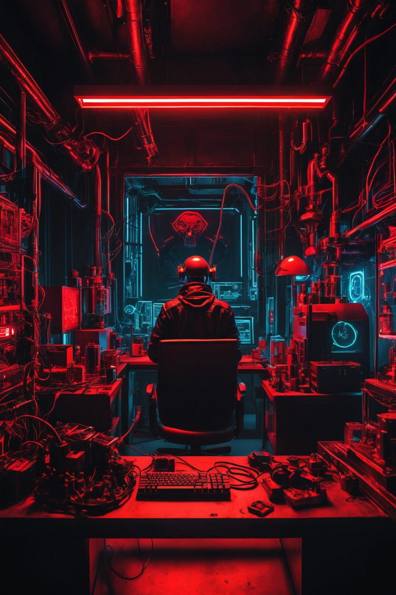

THE OTHER SIDE OF INTELLIGENCE
Ouija /
No todas las presencias
necesitan un cuerpo.

PREPARANDO IMAGENLOCAL RENDER / NO AI CALL
PNG, JPG o WebP · hasta 12 MB · se procesa aquí, no se sube.
THE CHANNEL
Estudios ocultos
Chat sin conectar
FIELD NOTE / 001¿Hay alguien
¿Hay alguien
del otro lado?
Símbolos, arquetipos y preguntas que sobreviven a la luz.
La imagen se vuelve lenguaje.
El lenguaje busca una presencia.
Borrador local · no enviado · sin respuestas simuladas.
ENTER ↵ / SHIFT + ENTER0 / 4000